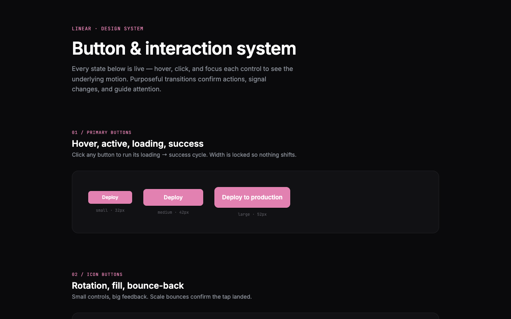
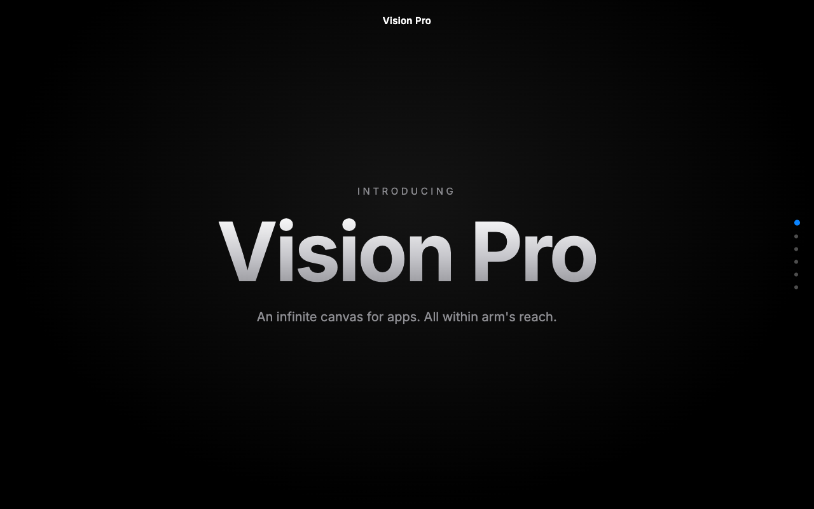
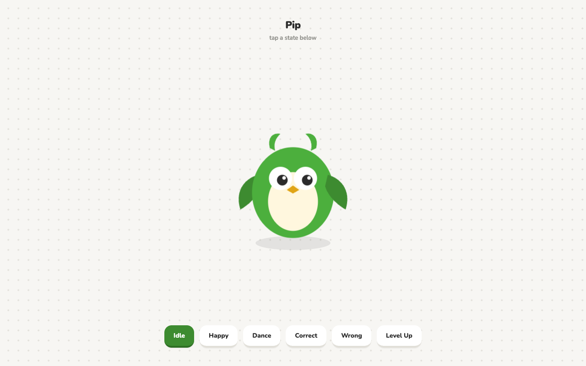
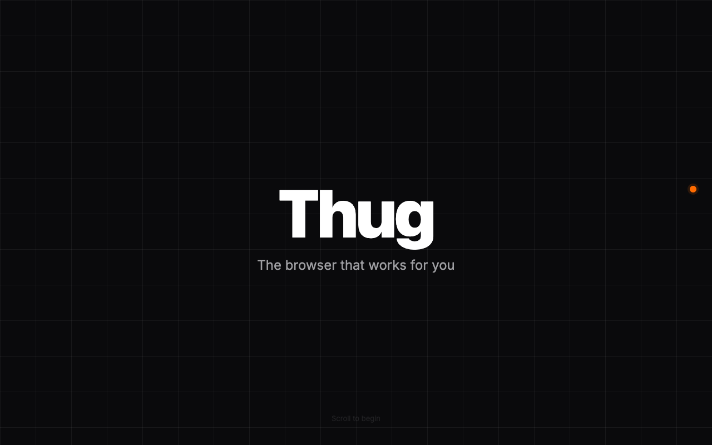
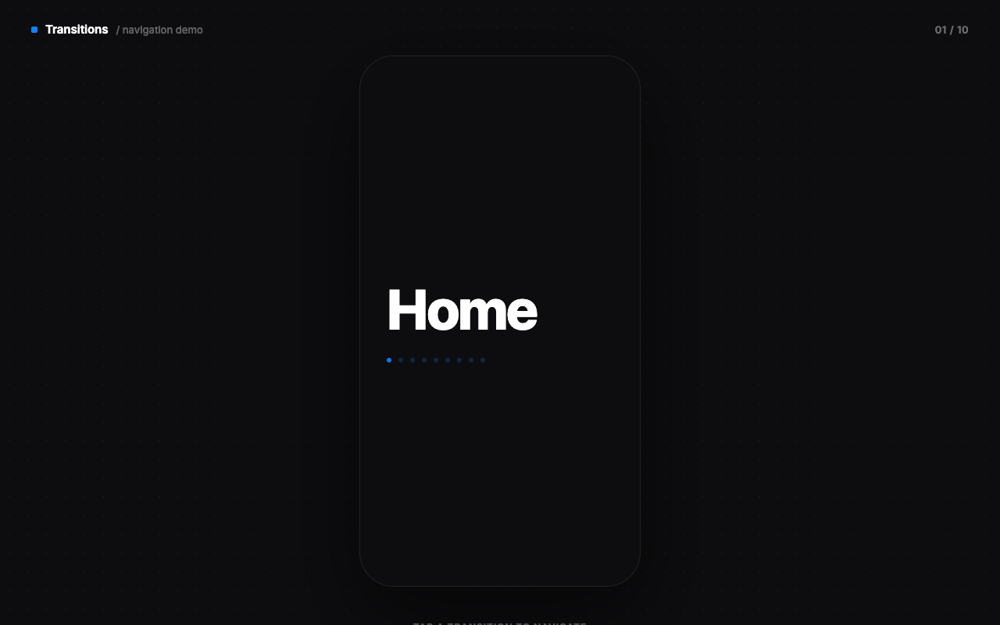

Motion Studies
5 animations, in motion.
Scroll stories, micro-interactions, and page transitions — motion and interaction range outside the case-study work above.

Linear
A live button & interaction system — hover, loading, and success states you can click through.
Open prototype →
Vision Pro
An Apple-style scroll-reveal hero, from intro headline to a reservation CTA.
Open prototype →
Pip
A mascot character with tappable states — idle, happy, dance, and level-up.
Open prototype →
Thug
A dark, bold browser-landing reveal — problem, solution, and tabs-to-calm story.
Open prototype →
Page Transition System
Ten tap-to-navigate transitions — fade, slide, 3D flip, glitch, and more.
Open prototype →